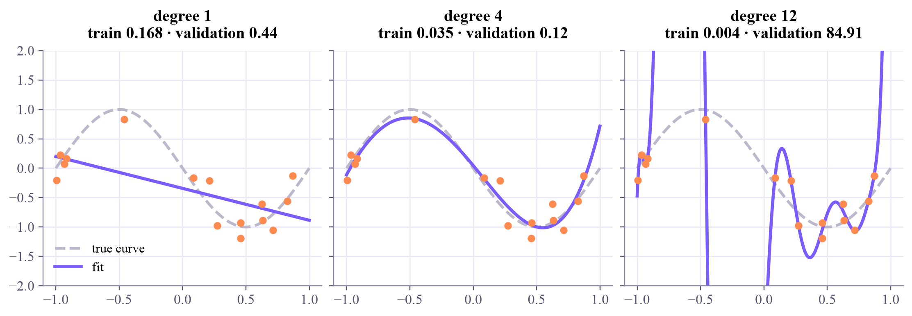
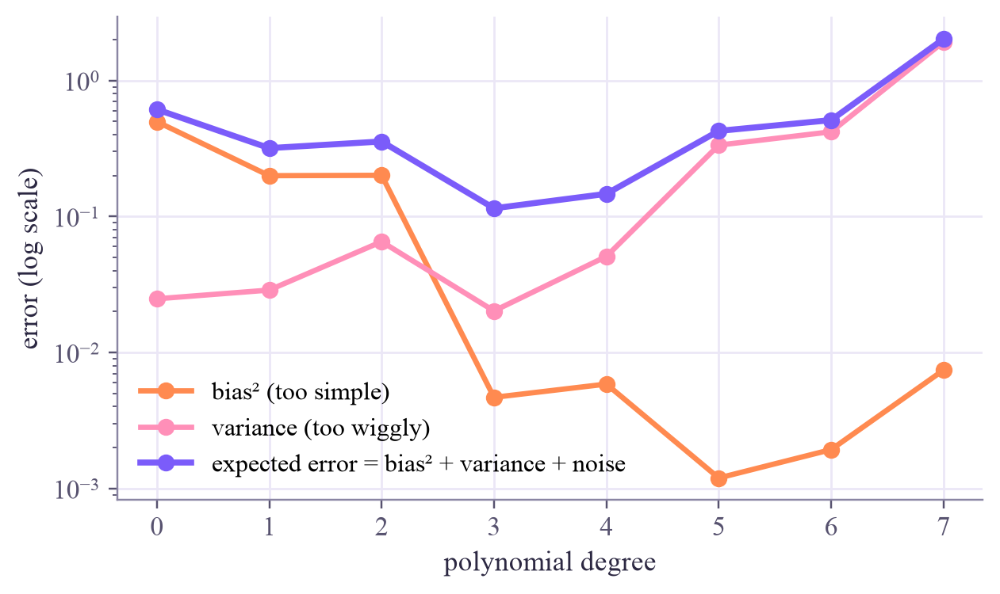

training points: 15 validation points: 300
Machine Learning
 about 11 min
about 11 min ml-w2d4.ipynb
ml-w2d4.ipynb
Curves and overfitting: bias versus variance
Polynomials let a linear model bend. Bend too little and it misses the pattern; bend too much and it memorizes the noise.
In this lesson you will
- Fit curves with polynomial features, which are still a linear model
- Recognize underfitting and overfitting from training and validation error
- Explain the bias–variance trade-off, and why more data helps
Warm-up
1 minConnect the dots, or see the trend?

Give a child 15 dots and a pencil and they'll connect every dot with a wobbly line. A scientist draws a smooth curve that misses some dots but captures the trend. Flexible models are like the child: they can pass through every point, and that is exactly the problem. Today you'll see why, and measure it.
Big idea
4 minCurves, and two ways to be wrong
A straight line can't follow a wave. But a polynomial can bend:
Here's the trick: this is still a linear model, just in new features . Make those columns, and least squares or PyTorch fits it exactly as before. The degree sets how much the curve can bend.
Underfitting (high bias)
Degree too low: the model can't express the pattern. Training and validation errors are both high. It's wrong in the same way, whatever data it gets.
Overfitting (high variance)
Degree too high: the curve chases the noise. Training error is tiny, validation error is large, and a new training set gives a completely different curve.
For a fixed amount of data, the expected error on new data splits into three parts:
Bias is how far the average fit (over many possible training sets) is from the truth. Variance is how much the fits disagree with each other. Noise is the part no model can predict. Simple models have high bias; flexible ones have high variance.
The best model sits between the two: flexible enough to follow the pattern, not so flexible that it follows the noise. Validation data tells you where that is.
More training data shrinks variance, so the right amount of flexibility grows with the data.
Play
3 minBend the curve
The dashed gray curve is the truth, which the model never sees. Raise the degree and watch the training and validation errors. Then switch on fits from 8 other datasets: that fan of curves is the variance.
Try this
At degree 1 the fan is tight but every curve misses the wave: high bias, low variance. At degree 10 the fan explodes: low bias, enormous variance. Find the degree where the validation error bottoms out in the chart below the plot.
Code
2 minOverfitting, measured
The notebook for this lessonEvery code cell below, with what it printed, is in
ml-w2d4.ipynb. To change the code and run it yourself, open the notebook in Google Colab (free, in your browser) or download it for your own Jupyter.import numpy as np
import matplotlib.pyplot as plt
rng = np.random.default_rng(0)
def true_curve(x):
return np.sin(np.pi * (x + 1))
def make_data(n):
x = rng.uniform(-1, 1, n)
return x, true_curve(x) + rng.normal(0, 0.3, n) # noise with spread 0.3
x_train, y_train = make_data(15) # small training set
x_val, y_val = make_data(300) # lots of fresh data to measure the real error
print("training points:", len(x_train), " validation points:", len(x_val))What it printed in the notebook
Polynomial features are just extra columns:
def poly_features(x, degree):
return np.vander(x, degree + 1, increasing=True) # columns 1, x, x^2, ..., x^degree
def fit(x, y, degree):
w, *_ = np.linalg.lstsq(poly_features(x, degree), y, rcond=None)
return w
def mse(w, x, y):
return np.mean((poly_features(x, len(w) - 1) @ w - y) ** 2)
print(poly_features(np.array([0.5, 2.0]), 3))What it printed in the notebook
[[1. 0.5 0.25 0.125] [1. 2. 4. 8. ]]
grid = np.linspace(-1, 1, 300)
fig, axes = plt.subplots(1, 3, figsize=(10, 3.4), sharey=True, layout="constrained")
for ax, degree in zip(axes, [1, 4, 12]):
w = fit(x_train, y_train, degree)
ax.plot(grid, true_curve(grid), "--", color="#bcb7cb", label="true curve")
ax.plot(grid, poly_features(grid, degree) @ w, color="#7b5cfa", lw=2.5, label="fit")
ax.scatter(x_train, y_train, color="#ff8a50", zorder=3, s=25)
ax.set_ylim(-2, 2)
ax.set_title(f"degree {degree}\ntrain {mse(w, x_train, y_train):.3f} · validation {mse(w, x_val, y_val):.2f}")
axes[0].legend(loc="lower left")
plt.show()What it printed in the notebook

Now the decomposition itself, measured over 300 different training sets:
degrees = range(0, 8)
bias2, variance = [], []
for d in degrees:
preds = []
for _ in range(300):
x, y = make_data(25)
preds.append(poly_features(grid, d) @ fit(x, y, d))
preds = np.array(preds) # 300 fits x 300 grid points
bias2.append(np.mean((preds.mean(axis=0) - true_curve(grid)) ** 2))
variance.append(np.mean(preds.var(axis=0)))
bias2, variance = np.array(bias2), np.array(variance)
plt.figure(figsize=(6.4, 3.6))
plt.plot(degrees, bias2, "o-", color="#ff8a50", label="bias² (too simple)")
plt.plot(degrees, variance, "o-", color="#ff8fb8", label="variance (too wiggly)")
plt.plot(degrees, bias2 + variance + 0.09, "o-", color="#7b5cfa", lw=2.5, label="expected error = bias² + variance + noise")
plt.yscale("log")
plt.xlabel("polynomial degree")
plt.ylabel("error (log scale)")
plt.legend()
plt.show()
for d in [1, 3, 7]:
print(f"degree {d}: bias² {bias2[d]:.3f} variance {variance[d]:.3f} expected error {bias2[d] + variance[d] + 0.09:.3f}")What it printed in the notebook

degree 1: bias² 0.200 variance 0.029 expected error 0.318 degree 3: bias² 0.005 variance 0.020 expected error 0.115 degree 7: bias² 0.007 variance 1.926 expected error 2.023
Your turn
2 minYour turn: does more data cure overfitting?
Fit a degree-9 polynomial to training sets of 15, 50 and 500 points and compare their validation errors. What happens to the overfitting?
for n in [15, 50, 500]:
x, y = make_data(n)
w = np.zeros(10) # TODO: replace with the degree-9 fit to (x, y)
print(f"n = {n:3d}: validation MSE = {mse(w, x_val, y_val):.3f}")Need a hint?
One line: w = fit(x, y, 9).
Show a solution
for n in [15, 50, 500]:
x, y = make_data(n)
w = fit(x, y, 9)
print(f"n = {n:3d}: validation MSE = {mse(w, x_val, y_val):.3f}")
print("More data pins the wiggles down: the variance shrinks, and the same flexible model stops overfitting.")
print("(The best possible is the noise level, 0.3² = 0.09.)")What it printed in the notebook
n = 15: validation MSE = 1.653 n = 50: validation MSE = 0.107 n = 500: validation MSE = 0.089 More data pins the wiggles down: the variance shrinks, and the same flexible model stops overfitting. (The best possible is the noise level, 0.3² = 0.09.)
Check yourself
2 minQuick check
Question 1 of 3
Training error keeps falling as the degree grows, but validation error starts rising after degree 4. From degree 5 on, the model is…
Question 2 of 3
You train the same model on 8 different random training sets and get 8 very different curves. That's a sign of…
Question 3 of 3
Why is a degree-3 polynomial still called a linear model?
Wrap-up
1 minToday in one sentence
Quantum link
Quantum models face the same trade-off. More qubits, more layers and more gate angles make a circuit more expressive, and an expressive circuit can overfit a small dataset. Choosing a circuit's size is the quantum version of choosing the degree.
Go deeper (optional)
ISLP section 2.2.2 ("The bias–variance trade-off") has the classic three-panel picture; section 7.1 covers polynomial regression.
Next in Machine Learning: instead of only lowering the degree, put the flexible model on a leash. Ridge and lasso.

That's the lesson!
Tap the button to save it. Short and steady wins.
Next in Machine LearningRidge and lasso: keeping models simple
Marked by mistake? Undo